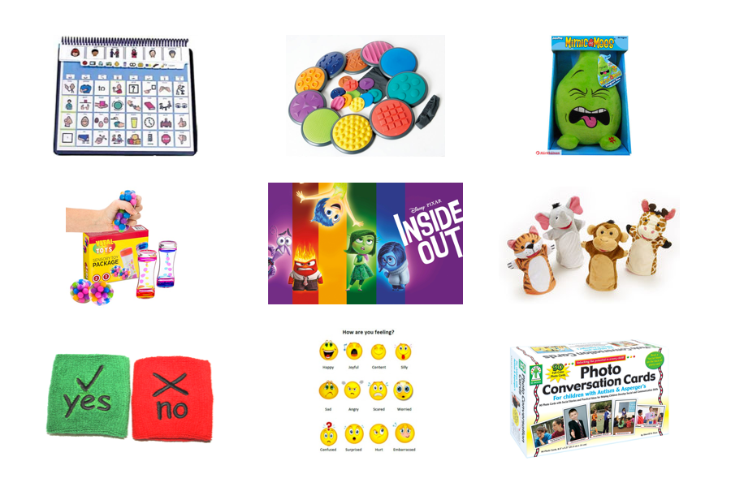

Design Process
After pivoting from another concept (due to technical reasons), we designed and developed Emotibubbles in 7 weeks.
01. Inspiration
Initially inspired by the popular Pixar movie Inside Out, we began by exploring other tools that support children's emotional intelligence development. We learned that children with autism and other developmental challenges often need support in this area.

02. Research
To learn more about social emotional learning and autism, we read academic papers, pored through parenting blogs, and talked to parents & teachers.
"Social and emotional learning (SEL) is the process through which children and adults acquire and effectively apply the knowledge, attitudes, and skills necessary to understand and manage emotions, set and achieve positive goals, feel and show empathy for others, establish and maintain positive relationships, and make responsible decisions." — CASEL
"For many children on the autism spectrum, reading facial expressions is a daily struggle. Is my teacher happy with me or irritated? Is my sister worried or is she sad? Many children with autism can have a difficult time determining what other people are thinking and feeling, and because of this, struggle to partake in what neurotypical people may deem normal social interactions." — Autism Parenting Magazine (2015)
We learned a lot from speaking to Maureen Morgan, Director of the Wellesley College Child Study Center & former public school teacher who has 20 years of experience working with children who have autism and other special needs:
Many children with autism are sensory seekers who find various sensory inputs such as texture, resistance, and vibration to be comforting.
In classrooms today, teachers use tools such as PECs, stuffed animals, journaling activities, picture cards, and digital toy-like interfaces to help young kids with social emotional learning.
For teachers, having students who are able to manage and regulate their emotions is extremely important. Without this fundamental building block, teachers must use limited class time working with kids on their behavior instead of teaching them material.
03. Conceptual Design
Our goal was to design something that felt familiar and comforting to young kids. Thus, we began exploring the idea of a pillow-like plush toy, which eventually became Emotibubbles.
04. Prototyping
We learned how to sew, work with a microcontroller, build circuits, solder wires, and more, all for the first time. Dozens of wires, many needle-pricked fingers, and 1 fried Lilypad Vibe Board later, we finally got a working prototype!
Complete list of all technologies and materials used:
- 1 Arduino Mega microcontroller
- 1 full sized breadboard
- 1 Alitove LED Strip Light
- 6 force sensitive resistors
- 6 individual LEDs
- 6 Lilypad Vibe Boards
- FastLED library
- conductive thread
- flannel fabric
- velcro
- cotton stuffing
- wire cutter/stripper
- soldering iron